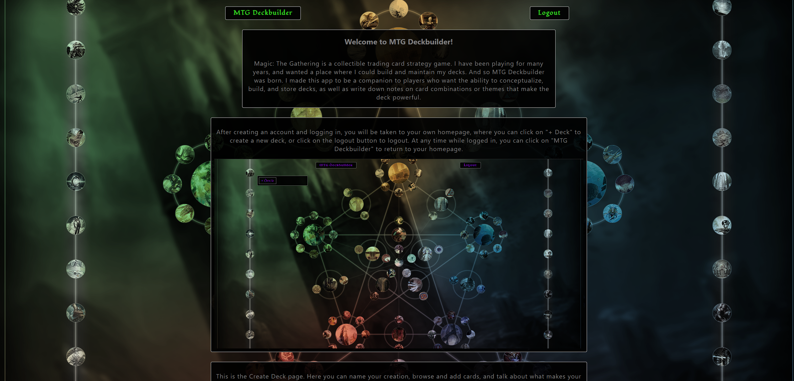
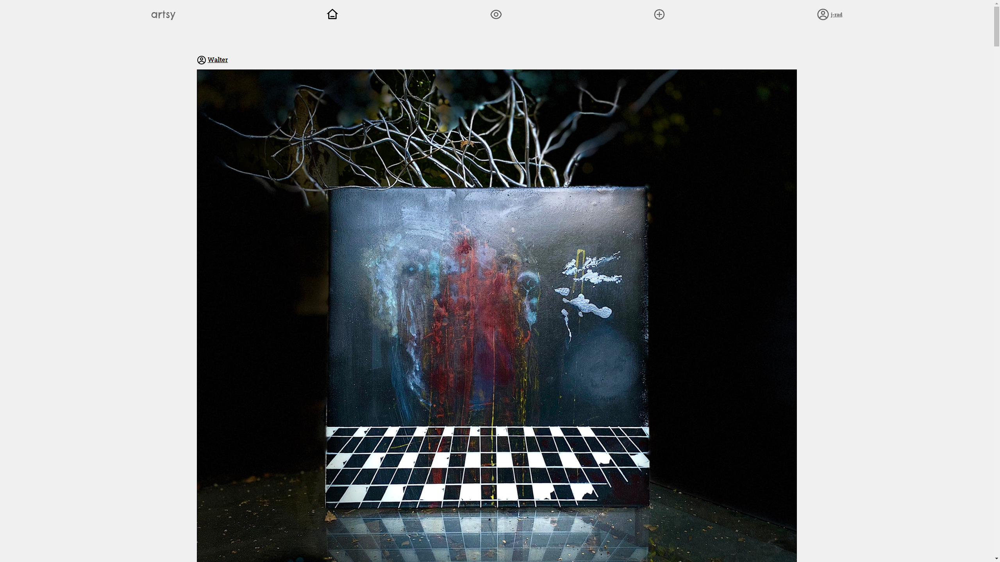

Hey, This is Jerrad.

Full stack web developer.
About Me
I started on this path because I have always had a love of computers. They connect millions of users around the world - sharing ideas, problems, solutions, and growing collectively as a society. I have been building my own PCs since I was a teenager, and briefly worked with html during my high school years, but it wasn't until recently that I made the plunge and started working toward a career in tech.
I prefer to work as part of a team, and would thrive in any team environment. Collaboration pushes everyone on a team to learn and grow. I love to learn, and I love taking on new challenges, because they force you out of your comfort zone and show you what you are truly made of. I'm always hungry, and I will work hard wherever I am at.
For me, software development is unique in that it allows creativity, dense problem solving, as well as taking things from scratch and making some amazing end results - yet all i'm really doing is learning how to talk to machines... so if that skynet thing ever does happen, I'm your translator.Come with me if you want to live.
If I'm not coding, I'm either reading about new tech, Playing games, Reading anything else, and spending time with loved ones.
Portfolio
Chrono Trigger: The Quiz
This is my Quiz App - "Chrono Trigger: the Quiz". I created this quiz app as a project requirement for class, but it took on a life of its own shortly after. I used Chrono Trigger as my theme because this was my favorite game growing up, and I wanted to share the fun i had with others. The app iterates through questions using JS and jQuery, displays whether you got the answer right/wrong, and tallies your score overall.
This app could easily be molded to fit with any quiz or test content, and would be great to use as a teaching tool / testing tool in a classroom for multiple choice testing.

- Link to Github Repo
- Skills used: HTML, CSS, JS, jQuery
MTG Deckbuilder
This is MTG Deckbuilder, my first capstone project at Thinkful bootcamp. Magic: The Gathering is a collectible trading card strategy game. I have been playing for many years, and wanted a place where I could build and maintain my decks/ideas for decks. And so MTG Deckbuilder was born. I made this app to be a companion to players who want the ability to conceptualize, build, and store decks, as well as write down notes on card combinations or themes that make the deck powerful.
I created this full-stack app solo in a 4 week time period.
- Link to Github Repo
- Skills used: React, CSS, Nodejs, Express, PostgreSQL
Artsy
This is Artsy! I created this with a team of four as a capstone project during my time at thinkful. It is an Art-Centric instagram-style social media experience. A user creates an account, shares a bit about themselves, then starts uploading their photos/art. Users can also comment, and subscribe to other users to see what inspires them, so they too may be inspired.
I worked with Jonathan Cochran, Michaela Bateman, and Sacha Sedriks on this project, and it is a piece I am very proud of. We spent 4 weeks working together on this project, and everyone did a stellar job.
- Link to Github Repo
- Skills used: React, CSS, Nodejs, Express, PostgreSQL